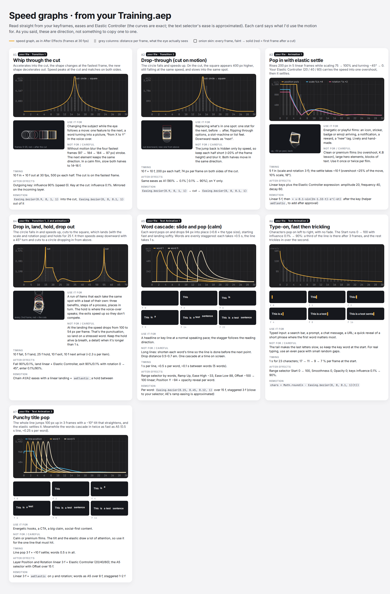
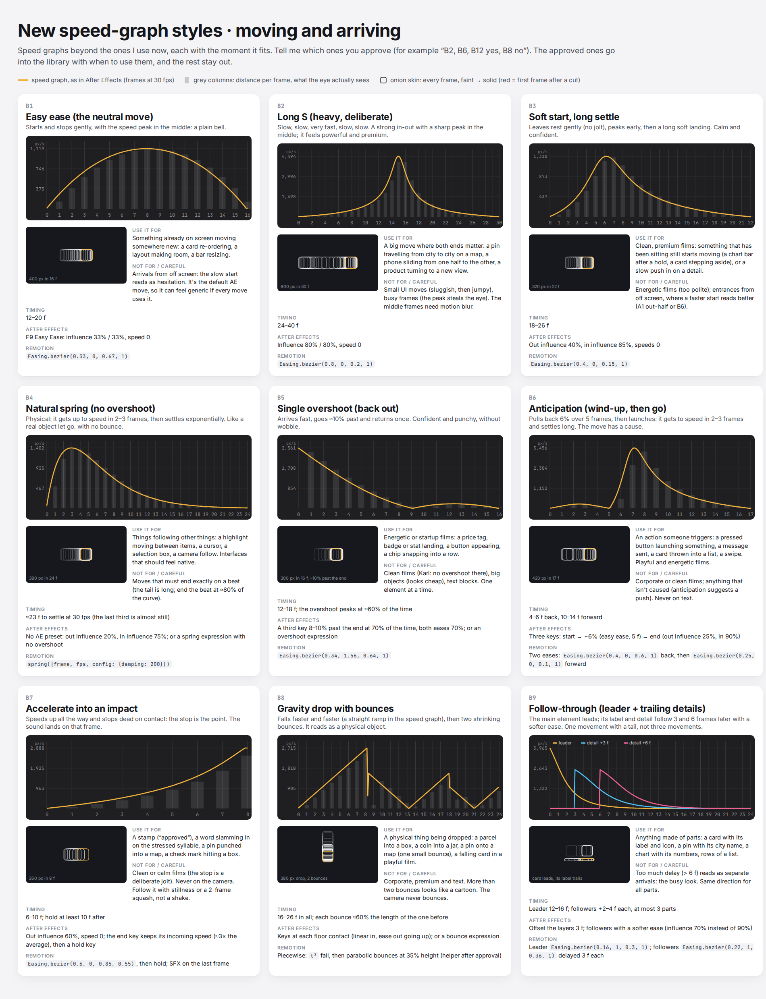
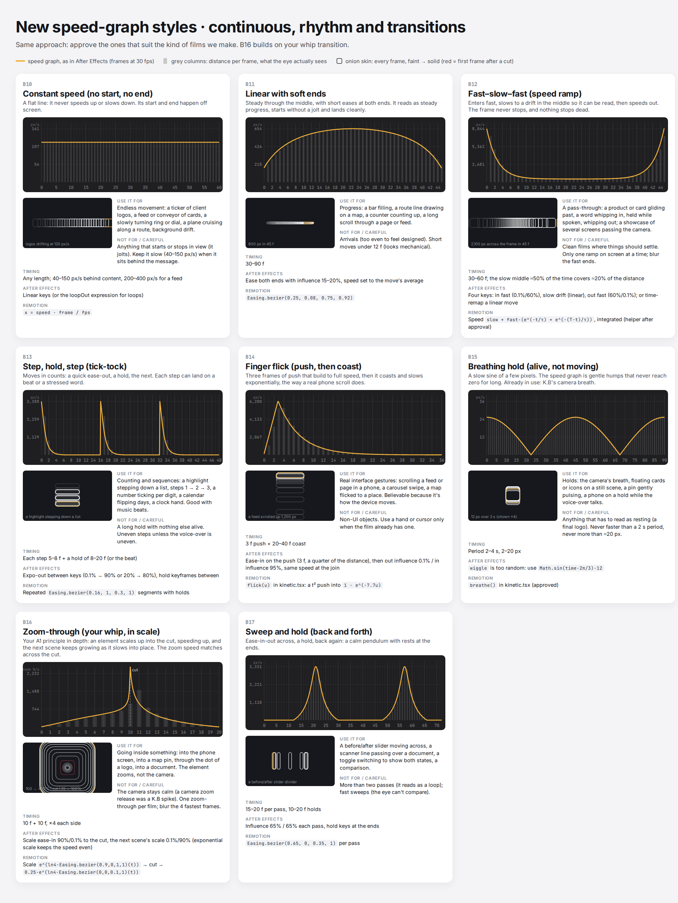

planning/visual-strategy.mdLoading the module…
The skill's own instructions run the workflow and read these modules one step at a time, only when a step needs them. Every rule lives in exactly one module. The three intake-form styles and their reference frames are here too.
Each step lists the modules it reads. Steps 3 to 12 are planning; only the revised storyboard goes to Karl for approval.
Before step 1, read the recurring lessons in
Pick a module to read it here. Paths in the text open the module they name.
planning/visual-strategy.mdLoading the module…
These are the reference frames behind the three styles clients pick on the intake form. The skill views the chosen style's contact sheet to calibrate the look, then designs from the style's written definition with the client's own product, words and brand color.
Reference only. Client videos never reuse these frames' products, data, people, headlines or layouts. The frames show a look; the client supplies everything in it.
The client's own product interface is the hero: rebuilt interface cards on a near-white canvas beside a bold two-color headline.


One idea per scene, acted out by one calm abstract form, with a short statement in bold type.


A soft, grainy multi-hue gradient, a gradient-filled headline, and frosted tiles, cables and app windows showing things flowing into one result.


The speed graphs Karl approved in October 2026: seven read from his After Effects file, seventeen beyond it. Each card shows the graph, the distance covered on each frame and an onion skin, with the moment it suits. The written version is .


